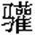

1
一翻《呐喊》，才又记得我曾在中华民国九年双十节[664]的前几天做过一篇《头发的故事》；去年，距今快要一整年了罢，那时是《语丝》[665]出世未久，我又曾为它写了一篇《说胡须》。实在似乎很有些章士钊[666]之所谓“每况愈下”[667]了，——自然，这一句成语，也并不是章士钊首先用错的，但因为他既以擅长旧学自居，我又正在给他打官司，所以就栽在他身上。当时就听说，——或者也是时行的“流言”，——一位北京大学的名教授就愤慨过，以为从胡须说起，一直说下去，将来就要说到屁股，则于是乎便和上海的《晶报》[668]一样了。为什么呢？这须是熟精今典的人们才知道，后进的“束发小生”[669]是不容易了然的。因为《晶报》上曾经登过一篇《太阳晒屁股赋》，屁股和胡须又都是人身的一部分，既说此部，即难免不说彼部，正如看见洗脸的人，敏捷而聪明的学者即能推见他一直洗下去，将来一定要洗到屁股。所以有志于做gentleman[670]者，为防微杜渐起见，应该在背后给一顿奚落的。——如果说此外还有深意，那我可不得而知了。
昔者窃闻之：欧美的文明人讳言下体以及和下体略有渊源的事物。假如以生殖器为中心而画一正圆形，则凡在圆周以内者均在讳言之列；而圆之半径，则美国者大于英。中国的下等人，是不讳言的；古之上等人似乎也不讳，所以虽是公子而可以名为黑臀[671]。讳之始，不知在什么时候；而将英美的半径放大，直至于口鼻之间或更在其上，则昉于一千九百二十四年秋。
文人墨客大概是感性太锐敏了之故罢，向来就很娇气，什么也给他说不得，见不得，听不得，想不得。道学先生于是乎从而禁之，虽然很像背道而驰，其实倒是心心相印。然而他们还是一看见堂客的手帕或者姨太太的荒冢就要做诗。我现在虽然也弄弄笔墨做做白话文，但才气却仿佛早经注定是该在“水平线”[672]之下似的，所以看见手帕或荒冢之类，倒无动于中；只记得在解剖室里第一次要在女性的尸体上动刀的时候，可似乎略有做诗之意，——但是，不过“之意”而已，并没有诗，读者幸勿误会，以为我有诗集将要精装行世，传之其人，先在此预告。[673]后来，也就连“之意”都没有了，大约是因为见惯了的缘故罢，正如下等人的说惯一样。否则，也许现在不但不敢说胡须，而且简直非“人之初性本善论”或“天地玄黄赋”[674]便不屑做。遥想土耳其革命[675]后，撕去女人的面幕，是多么下等的事？呜呼，她们已将嘴巴露出，将来一定要光着屁股走路了！
2
虽然有人数我为“无病呻吟”[676]党之一，但我以为自家有病自家知，旁人大概是不很能够明白底细的。倘没有病，谁来呻吟？如果竟要呻吟，那就已经有了呻吟病了，无法可医。——但模仿自然又是例外。即如自胡须直至屁股等辈，倘使相安无事，谁爱去纪念它们；我们平居无事时，从不想到自己的头，手，脚以至脚底心。待到慨然于“头颅谁斫”，“髀肉（又说下去了，尚希绅士淑女恕之）复生”[677]的时候，是早已别有缘故的了，所以，“呻吟”。而批评家们曰：“无病”。我实在艳羡他们的健康。
譬如腋下和胯间的毫毛，向来不很肇祸，所以也没有人引为题目，来呻吟一通。头发便不然了，不但白发数茎，能使老先生揽镜慨然，赶紧拔去；清初还因此杀了许多人。民国既经成立，辫子总算剪定了，即使保不定将来要翻出怎样的花样来，但目下总不妨说是已经告一段落。于是我对于自己的头发，也就淡然若忘，而况女子应否剪发的问题呢，因为我并不预备制造桂花油或贩卖烫剪：事不干己，是无所容心于其间的。但到民国九年，寄住在我的寓里的一位小姐[678]考进高等女子师范学校去了，而她是剪了头发的，再没有法可梳盘龙髻或S髻。到这时，我才知道虽然已是民国九年，而有些人之嫉视剪发的女子，竟和清朝末年之嫉视剪发的男子相同；校长M先生虽被天夺其魄[679]，自己的头顶秃到近乎精光了，却偏以为女子的头发可系千钧，示意要她留起。设法去疏通了几回，没有效，连我也听得麻烦起来，于是乎“感慨系之矣”了，随口呻吟了一篇《头发的故事》。但是，不知怎的，她后来竟居然并不留长，现在还是蓬蓬松松的在北京道上走。
本来，也可以无须说下去了，然而连胡须样式都不自由，也是我平生的一件感愤，要时时想到的。胡须的有无，式样，长短，我以为除了直接受着影响的人以外，是毫无容喙的权利和义务的，而有些人们偏要越俎代谋[680]，说些无聊的废话，这真和女子非梳头不可的教育，“奇装异服”者要抓进警厅去办罪的政治一样离奇。要人没有反拨，总须不加刺激；乡下人捉进知县衙门去，打完屁股之后，叩一个头道：“谢大老爷！”这情形是特异的中国民族所特有的。
不料恰恰一周年，我的牙齿又发生问题了，这当然就要说牙齿。这回虽然并非说下去，而是说进去，但牙齿之后是咽喉，下面是食道，胃，大小肠，直肠，和吃饭很有相关，仍将为大雅所不齿；更何况直肠的邻近还有膀胱呢，呜呼！
3
中华民国十四年十月二十七日，即夏历之重九，国民因为主张关税自主，游行示威[681]了。但巡警却断绝交通，至于发生冲突，据说两面“互有死伤”。次日，几种报章（《社会日报》，《世界日报》，《舆论报》，《益世报》，《顺天时报》[682]等）的新闻中就有这样的话：
“学生被打伤者，有吴兴身（第一英文学校），头部刀伤甚重……周树人（北大教员）齿受伤，脱门牙二。其他尚未接有报告。……”
这样还不够，第二天，《社会日报》，《舆论报》，《黄报》，《顺天时报》又道：
“……游行群众方面，北大教授周树人（即鲁迅）门牙确落二个。……”
舆论也好，指导社会机关也好，“确”也好，不确也好，我是没有修书更正的闲情别致的。但被害苦的是先有许多学生们，次日我到L学校[683]去上课，缺席的学生就有二十余，他们想不至于因为我被打落门牙，即以为讲义也跌了价的，大概是预料我一定请病假。还有几个尝见和未见的朋友，或则面问，或则函问；尤其是朋其[684]君，先行肉薄中央医院，不得，又到我的家里，目睹门牙无恙，这才重回东城，而“昊天不吊”[685]，竟刮起大风来了。
假使我真被打落两个门牙，倒也大可以略平“整顿学风”[686]者和其党徒之气罢；或者算是说了胡须的报应，——因为有说下去之嫌，所以该得报应，——依博爱家言，本来也未始不是一举两得的事。但可惜那一天我竟不在场。我之所以不到场者，并非遵了胡适[687]教授的指示在研究室里用功，也不是从了江绍原[688]教授的忠告在推敲作品，更不是依着易卜生博士的遗训[689]正在“救出自己”；惭愧我全没有做那些大工作，从实招供起来，不过是整天躺在窗下的床上而已。为什么呢？曰：生些小病，非有他也。
然而我的门牙，却是“确落二个”的。
4
这也是自家有病自家知的一例，如果牙齿健全的，决不会知道牙痛的人的苦楚，只见他歪着嘴角吸风，模样着实可笑。自从盘古开辟天地以来，中国就未曾发明过一种止牙痛的好方法，现在虽然很有些什么“西法镶牙补眼”的了，但大概不过学了一点皮毛，连消毒去腐的粗浅道理也不明白。以北京而论，以中国自家的牙医而论，只有几个留美出身的博士是好的，但是，yes，贵不可言。至于穷乡僻壤，却连皮毛家也没有，倘使不幸而牙痛，又不安本分而想医好，怕只好去叩求城隍土地爷爷罢。
我从小就是牙痛党之一，并非故意和牙齿不痛的正人君子们立异，实在是“欲罢不能”。听说牙齿的性质的好坏，也有遗传的，那么，这就是我的父亲赏给我的一份遗产，因为他牙齿也很坏。于是或蛀，或破，……终于牙龈上出血了，无法收拾；住的又是小城，并无牙医。那时也想不到天下有所谓“西法……”也者，惟有《验方新编》[690]是唯一的救星；然而试尽“验方”都不验。后来，一个善士传给我一个秘方：择日将栗子风干，日日食之，神效。应择那一日，现在已经忘却了，好在这秘方的结果不过是吃栗子，随时可以风干的，我们也无须再费神去查考。自此之后，我才正式看中医，服汤药，可惜中医仿佛也束手了，据说这是叫“牙损”，难治得很呢。还记得有一天一个长辈斥责我，说，因为不自爱，所以会生这病的；医生能有什么法？我不解，但从此不再向人提起牙齿的事了，似乎这病是我的一件耻辱。如此者久而久之，直至我到日本的长崎，再去寻牙医，他给我刮去了牙后面的所谓“齿垽”，这才不再出血了，化去的医费是两元，时间是约一小时以内。
我后来也看看中国的医药书，忽而发见触目惊心的学说了。它说，齿是属于肾的，“牙损”的原因是“阴亏”。我这才顿然悟出先前的所以得到申斥的原因来，原来是它们在这里这样诬陷我。到现在，即使有人说中医怎样可靠，单方怎样灵，我还都不信。自然，其中大半是因为他们耽误了我的父亲的病的缘故罢，但怕也很挟带些切肤之痛的自己的私怨。
事情还很多哩，假使我有Victor Hugo[691]先生的文才，也许因此可以写出一部《Les Misérables》的续集。然而岂但没有而已么，遭难的又是自家的牙齿，向人分送自己的冤单，是不大合式的，虽然所有文章，几乎十之九是自身的暗中的辩护。现在还不如迈开大步一跳，一径来说“门牙确落二个”的事罢：
袁世凯也如一切儒者一样，最主张尊孔。做了离奇的古衣冠，盛行祭孔的时候，大概是要做皇帝以前的一两年。[692]自此以来，相承不废，但也因秉政者的变换，仪式上，尤其是行礼之状有些不同：大概自以为维新者出则西装而鞠躬，尊古者兴则古装而顿首。我曾经是教育部的佥事，因为“区区”[693]，所以还不入鞠躬或顿首之列的；但届春秋二祭，仍不免要被派去做执事。执事者，将所谓“帛”或“爵”[694]递给鞠躬或顿首之诸公的听差之谓也。民国十一年秋[695]，我“执事”后坐车回寓去，既是北京，又是秋，又是清早，天气很冷，所以我穿着厚外套，带了手套的手是插在衣袋里的。那车夫，我相信他是因为磕睡，胡涂，决非章士钊党；但他却在中途用了所谓“非常处分”[696]，以“迅雷不及掩耳之手段”，自己跌倒了，并将我从车上摔出。我手在袋里，来不及抵按，结果便自然只好和地母接吻，以门牙为牺牲了。于是无门牙而讲书者半年，补好于十二年之夏，所以现在使朋其君一见放心，释然回去的两个，其实却是假的。
5
孔二先生[697]说，“虽有周公之才之美，使骄且吝，其余，不足观也矣。”这话，我确是曾经读过的，也十分佩服。所以如果打落了两个门牙，借此能给若干人们从旁快意，“痛快”倒也毫无吝惜之心。而无如门牙，只有这几个，而且早经脱落何？但是将前事拉成今事，却也是不甚愿意的事，因为有些事情，我还要说真实，便只好将别人的“流言”抹杀了，虽然这大抵也以有利于己，至少是无损于己者为限。准此，我便顺手又要将章士钊的将后事拉成前事的胡涂账揭出来。
又是章士钊。我之遇到这个姓名而摇头，实在由来已久；但是，先前总算是为“公”，现在却像憎恶中医一样，仿佛也挟带一点私怨了，因为他“无故”将我免了官，所以，在先已经说过：我正在给他打官司。近来看见他的古文的答辩书了，很斤斤于“无故”之辩，其中有一段：
“……又该伪校务维持会擅举该员为委员，该员又不声明否认，显系有意抗阻本部行政，既情理之所难容，亦法律之所不许。……不得已于八月十二日，呈请执政将周树人免职，十三日由 执政明令照准……”
于是乎我也“之乎者也”地驳掉他：
“查校务维持会公举树人为委员，系在八月十三日，而该总长呈请免职，据称在十二日。岂先预知将举树人为委员而先为免职之罪名耶？……”
其实，那些什么“答辩书”也不过是中国的胡牵乱扯的照例的成法，章士钊未必一定如此胡涂；假使真只胡涂，倒还不失为胡涂人，但他是知道舞文玩法的。他自己说过：“挽近政治。内包甚复。一端之起。其真意往往难于迹象求之。执法抗争。不过迹象间事。……”[698]所以倘若事不干己，则与其听他说政法，谈逻辑，实在远不如看《太阳晒屁股赋》，因为欺人之意，这些赋里倒没有的。
离题愈说愈远了：这并不是我的身体的一部分。现在即此收住，将来说到那里，且看民国十五年秋罢。
一九二五年十月三十日。
注 释
[663] 本篇最初发表于1925年11月9日《语丝》周刊第五十二期。
[664] 双十节 1911年10月10日孙中山领导的革命党举行了武昌起义（即辛亥革命），次年1月1日建立中华民国，9月28日临时参议院议决10月10日为国庆纪念日，俗称“双十节”。
[665] 《语丝》 文艺性周刊，最初由孙伏园等编辑。1924年11月17日创刊于北京。1927年10月被奉系军阀张作霖查禁，随后移至上海续刊。1930年3月出至第五卷第五十二期停刊。鲁迅是主要撰稿人和支持者之一，并于该刊在上海出版后一度担任编辑。参看《三闲集·我和〈语丝〉的始终》。
[666] 章士钊（1881—1973） 字行严，号秋桐，笔名孤桐，湖南善化（今属长沙）人。辛亥革命前，曾参加反清革命运动，1914年5月在东京主办《甲寅》月刊（两年后停刊）。五四运动后，他是一个复古主义者。在1924年至1926年间，他曾任段祺瑞执政府的司法总长兼教育总长，参与压制学生运动，同时创办《甲寅》周刊，提倡尊孔读经，反对新文化运动。后来同情革命。
[667] “每况愈下” 原作“每下愈况”，见《庄子·知北游》。章太炎《新方言·释词》：“愈况，犹愈甚也。”后人引用常误作“每况愈下”。章士钊在《甲寅》周刊第一卷第三号《孤桐杂记》中也同样用错：“尝论明清相嬗。士气骤衰。……民国承清。每况愈下。”
[668] 《晶报》 当时上海一种趣味低俗的小报。原为《神州日报》的副刊，1919年3月单独出版。下文所说《太阳晒屁股赋》，是张丹斧（延礼）写的一篇无聊文章，发表于1917年4月26日《神州日报》副刊。
[669] “束发小生” 这是章士钊常用的轻视青年学生的话，如他在1923年作的《评新文化运动》一文中就说：“今之束发小生。握笔登先。名流巨公。易节恐后。”束发，古代指男子成童的年龄。
[670] Gentleman 英语：绅士。
[671] 黑臀 春秋时晋成公的名字，见《国语·周语（下）》所记单襄公的话：“吾闻成公之生也，其母梦神规其臀以墨曰：‘使有晋国，三而畀

之孙。’故名之曰黑臀。”[672] “水平线” 这是从当时现代评论社出版的《现代丛书》广告中引用来的。在《现代评论》第一卷第九期（1925年2月7日）刊登的《〈现代丛书〉出版预告》中说：“《现代丛书》中不会有一本无价值的书，一本读不懂的书，一本在水平线下的书。”
[673] 在《现代评论》1925年10月28日出版的“特别增刊第一号”上刊登的“现代文艺丛书广告”中，关于《志摩的诗》说：“徐志摩的第一部诗集。……书印两种，宣纸厚本定价一元四角，白连史本定价一元。却是聚珍宋字精印的线装书，很不讨厌。”鲁迅在这里顺笔予以讽刺。
[674] “人之初性本善” 是《三字经》的首句。“天地玄黄”，是《千字文》的首句。旧时学塾中常用这类句子作为练习文章的题目。
[675] 土耳其革命 指1919年基马尔领导的反帝反封建的资产阶级民主革命。经过多年的民族独立战争，于1923年10月宣布成立土耳其共和国。随后又对宗教、婚姻制度、社会习俗等进行了一系列的改革，妇女不带面纱是风俗改革中的一项。
[676] “无病呻吟” 原是一句成语，当时复古主义者常用此语来攻击提倡写白话文的人。如章士钊在《甲寅》周刊第一卷第十四期（1925年10月）《评新文学运动》一文中，曾影射白话文作者“忘其谫陋，无病呻吟”。
[677] “头颅谁斫” 据《资治通鉴》卷一八五记载，隋炀帝感到统治局面不稳时，“尝引镜自照，顾谓萧后曰：‘好头颈，谁当斫之？’”“髀肉复生”，《三国志·蜀书·先主刘备传》南朝宋裴松之注引《九州春秋》说，刘备投靠荆州牧刘表数年，因无用武之地，久不乘马，他“见髀里肉生，慨然流涕”。
[678] 一位小姐，指许羡苏（1901—1986），许钦文四妹。1920年暑假时，曾寄住八道湾鲁迅住所。
[679] M先生 指毛邦伟，贵州遵义人。清光绪举人，后赴日本留学，在东京高等师范学校毕业，1920年时任北京女子高等师范学校校长。天夺其魄，语出《左传》宣公十五年：“刘康公曰：‘不及十年，原叔必有大咎，天夺之魄矣。’”
[680] 越俎代谋 语出《庄子·逍遥游》，原作“越俎代庖”，意思是掌管祭祀的人，放下祭器去代替厨师做饭。
[681] 关税自主的游行示威 1925年10月26日（文中误作“二十七”），段祺瑞政府根据1922年2月华盛顿会议所通过的九国关税条约，邀请英、美、法等十二国，在北京召开所谓“关税特别会议”，企图在不平等条约的基础上，与各帝国主义国家成立新的关税协定。这是和当时各界民众要求彻底废除不平等条约愿望相反的。因此在会议开幕的当日，北京各学校和团体五万余人在天安门集会游行，反对关税会议，主张关税自主。游行刚至新华门，即被大批武装警察阻止、殴打，群众受伤十余人，被捕数人，造成流血事件。重九，即九月初九。
[682] 《社会日报》 1921年创刊于北京。原名《新社会报》，1922年5月改名《社会日报》，林白水主编。《世界日报》，1924年创刊于北京。原为晚报，1925年2月起改为日报，成舍我主编。《舆论报》，1922年创刊于北京，侯疑始主办。《益世报》，天主教教会报纸，1915年创刊于天津，次年增出北京版。比利时教士雷鸣远（后入中国籍）主办。《顺天时报》，日本人在中国办的中文报纸，1901年创刊于北京，中岛美雄主办。下文的《黄报》，1918年创刊于北京，薛大可主编。
[683] L学校 指北京黎明中学。1925年9月至12月鲁迅曾在该校兼课一学期。
[684] 朋其 即黄鹏基（1901—1952），四川仁寿人，当时是北京大学学生，《莽原》撰稿者之一。
[685] “昊天不吊” 语出《诗经·小雅·节南山》：“不吊昊天，乱靡有定。”“不吊昊天”为倒置句式，即上天不怜恤之意。汉蔡邕《焦君赞》：“昊天不吊，贤人遘慝。”
[686] “整顿学风” 1925年五卅事件后，北京学生纷纷罢课，声援上海工人的反帝爱国斗争。为了镇压学生爱国运动，教育总长章士钊草拟了《整顿学风令》，于8月25日在内阁会议上通过，由段祺瑞执政府明令发布，内有：“自后无论何校，不得再行借故滋事，并责成教育部拟具条规，认真整饬。”
[687] 胡适（1891—1962） 字适之，安徽绩溪人。当时是北京大学教授。他在《现代评论》第二卷第三十九期（1925年9月5日）发表的《爱国运动与求学》中，引用德国歌德在拿破仑兵围柏林时闭门研究中国文物，和费希特在柏林沦陷后仍继续讲学的事为例，希望学生不要“跟着人家乱跑乱喊”，“努力把你这块材料铸造成个有用的东西。”
[688] 江绍原（1898—1983） 安徽旌德人。当时为北京大学讲师。他在《现代评论》第二卷第三十期（1925年7月4日）发表的《黄狗与青年作者》一文中，认为青年作者发表不成熟的作品等于“流产”，并说：“我的小提议是：——无论作什么，非经过几番精审的推敲修正，决不发表。”
[689] 易卜生在致勃兰兑斯的信中说：“有的时候我真觉得全世界都像海上撞沉了船，最要紧的还是救出自己。”胡适在《爱国运动与求学》一文中也引用了这句话，并让学生闭门读书，“救国须从救出你自己下手”。
[690] 《验方新编》 清代鲍相璈编，共八卷。是过去很流行的通俗医药书。
[691] Victor Hugo雨果（1802—1885），法国作家。《Les Misérables》，《悲惨世界》，长篇小说，雨果的代表作之一。
[692] 袁世凯于1913年6月22日发布尊孔祀孔令。1914年2月7日又通令全国祭孔，以春秋两季行祀孔礼；2月20日颁布《崇圣典例》，同年9月28日率领各部总长并文武官吏，着新制古祭服，在北京孔庙举行“秋丁祭祀”典礼。
[693] “区区”佥事 作者从1912年8月起受任教育部佥事，1925年因支持北京女师大学生驱逐校长杨荫榆的运动，当年8月被教育总长章士钊非法免职，作者曾在平政院提出控告。当时有人说他因为失了“区区佥事”就反对章士钊，器量狭小，没有“学者的态度”等等。参看《华盖集·碰壁之余》。
[694] “帛” 古代祭祀时用来敬神的丝织品，祭后即行焚化，后来用纸作代替品。“爵”，古代的酒器，三足，铜制，祭祀时用来献酒。
[695] 按应为民国十二年春。鲁迅1923年3月25日日记：“星期。黎明往孔庙执事，归途坠车落二齿。”
[696] “非常处分” 章士钊免去鲁迅教育部佥事一职，并未通过法律程序。鲁迅认为这是“违法处分”，向平政院控告章士钊违法。章士钊为此写了答辩书，其中说：“……情势急迫，本部总长应有权执行此非常处分。”
[697] 孔二先生 即孔子。据《孔子家语·本姓解》，孔子有兄孟皮，他排行第二。文中所引的话，见《论语·泰伯》。
[698] 章士钊的这段话见《甲寅》周刊第一卷第一号（1925年7月18日）通讯栏他对吴敬恒来信所加的附言（“内包甚复”原作“内包深复”）。